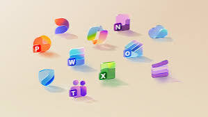

About MICROSOFT

Microsoft Corporation is an American multinational corporation and technology company headquartered in Redmond, Washington. Microsoft's best-known software products are the Windows line of operating systems, the Microsoft 365 suite of productivity applications, and the Edge web browser.
Its flagship hardware products are the Xbox video game consoles and the Microsoft Surface lineup of touchscreen personal computers. Microsoft is one of the Big Five American information technology companies, alongside Alphabet (Google), Amazon, Apple, and Meta.
History
Microsoft was founded by Bill Gates and Paul Allen on April 4, 1975, to develop and sell BASIC interpreters for the Altair 8800. It rose to dominate the personal computer operating system market with MS-DOS in the mid-1980s, followed by Microsoft Windows.
The company's 1986 initial public offering (IPO), and subsequent rise in its share price, created three billionaires and an estimated 12,000 millionaires among Microsoft employees. Since the 1990s, it has increasingly diversified from the operating system market and has made a number of corporate acquisitions, their largest being the acquisition of Activision Blizzard for $68.7 billion in 2023.
Under Satya Nadella's leadership as CEO, Microsoft has heavily expanded into cloud computing with Azure and has become a global leader in Artificial Intelligence technologies through massive investments in generative AI platforms.